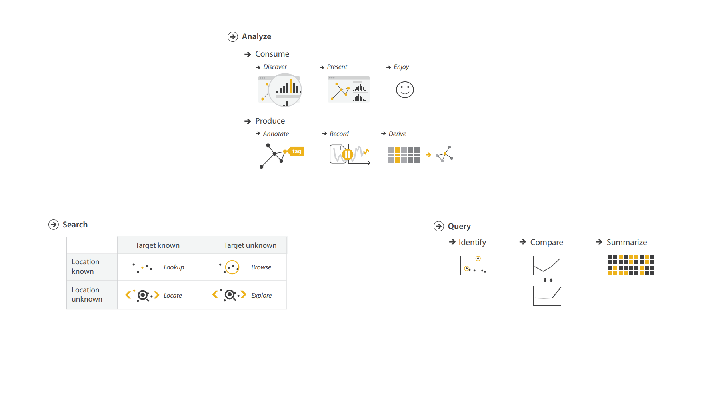
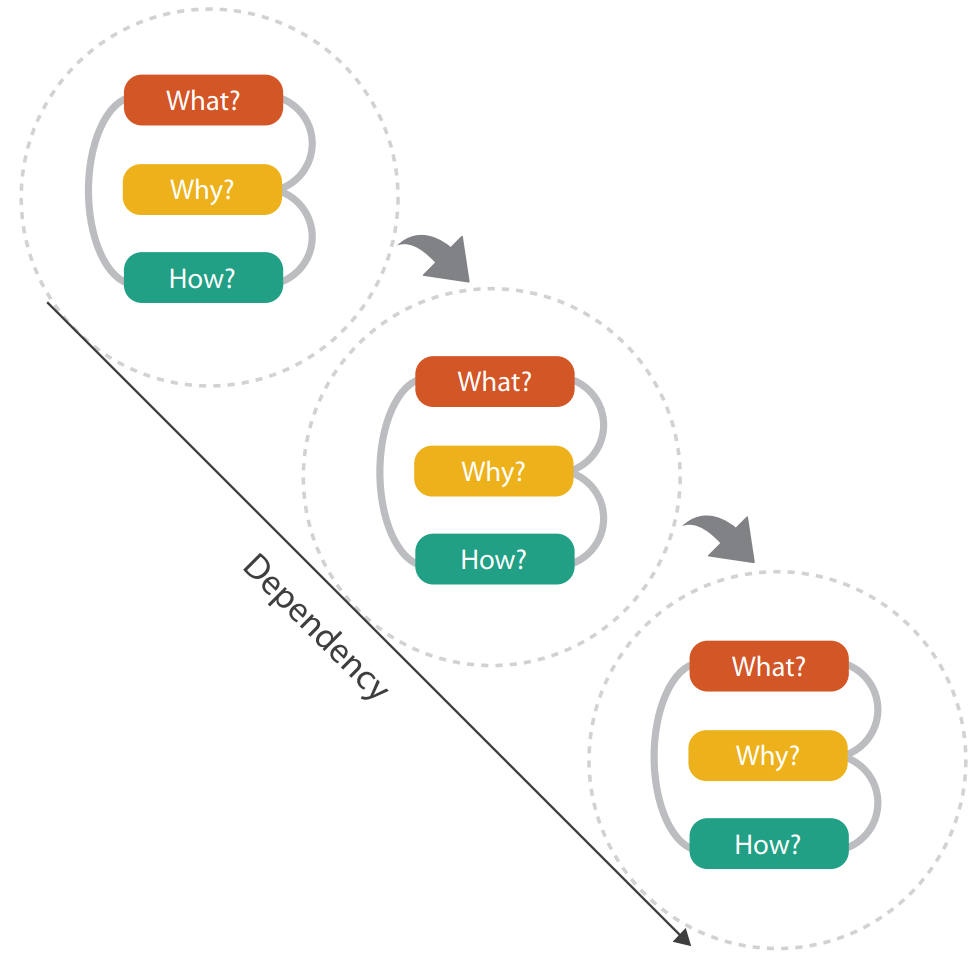
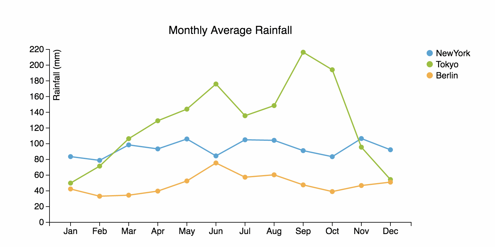
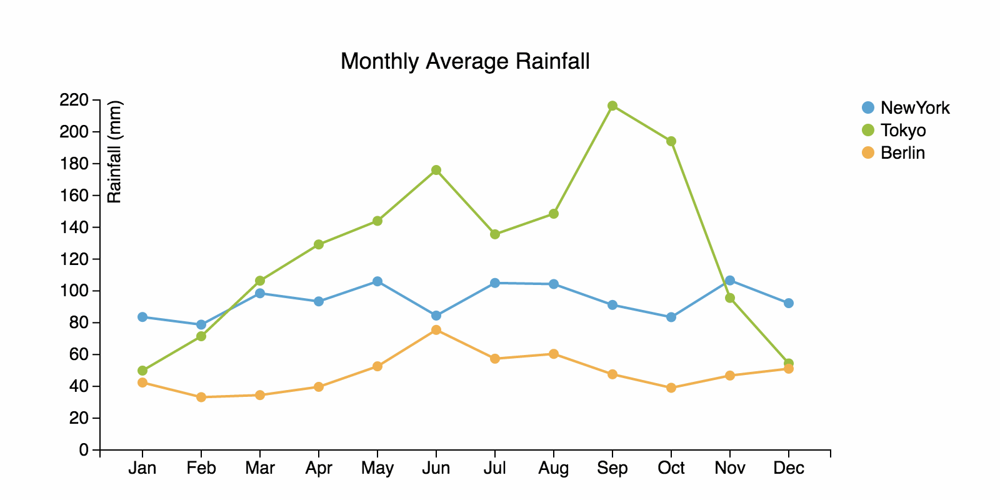
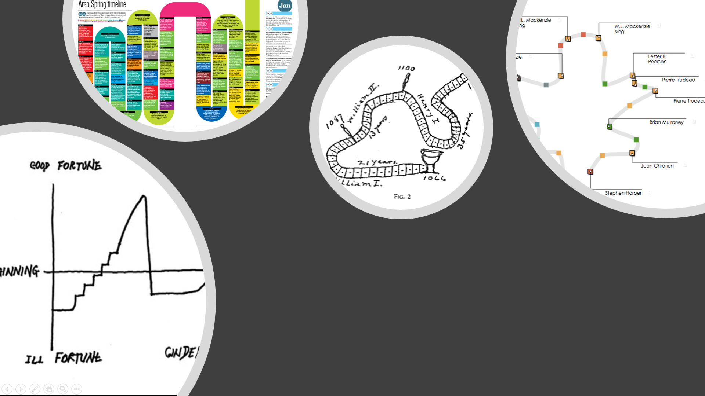
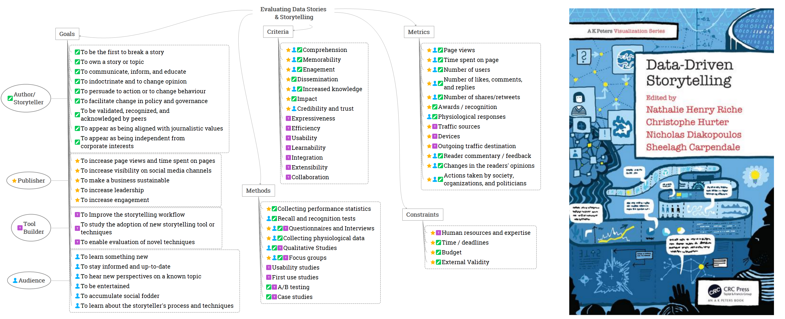

Constraints and Opportunities for
Expressive Information Design
Matthew Brehmer · Microsoft Research · @mattbrehmer
 Presentation at SFU SIAT 2019-01-28 · slides: aka.ms/siat1901
Presentation at SFU SIAT 2019-01-28 · slides: aka.ms/siat1901
Outline
· Expressive information design
· My background, methods, and values
· Focus section 1: Considerations and tools for expressive information design
· Focus section 2: Expressive information design for mobile devices
· Ongoing and future research
· Why SIAT?
Coverage of Topics & Publications
Considerations and tools for expressive information design:
· Timeline Storyteller C7 | DataToon C8 | Charticulator J7 | ChartAccent C5 | Timelines Revisited J6 | TimeLineCurator J4
Visualization task analysis:
· A Typology of Abstract Visualization Tasks J1 | Visualizing Dimensionally-Reduced Data W3
Empirical evaluation:
· Data-Driven Stories BC1 | Visualization Authoring Systems W5 | Variants of Multi-Series Bar Charts C6 |
· Overview: A Document Mining Tool for Journalists J2 | Pre-Design Empiricism for Visualization W2
Visualization for mobile devices:
· Ranges Over Time J8 | Animation vs. Small Multiples WP*
Visualization for resource conservation:
· Workflows for Energy Portfolio Analysis J5 Publications since 2013 by chronology + type as listed in my CV | WP* = working paper.
Coverage of Topics & Publications
Considerations and tools for expressive information design:
· Timeline Storyteller C7 | DataToon C8 | Charticulator J7 | ChartAccent C5 | Timelines Revisited J6 | TimeLineCurator J4
Visualization task analysis:
· A Typology of Abstract Visualization Tasks J1 | Visualizing Dimensionally-Reduced Data W3
Empirical evaluation:
· Data-Driven Stories BC1 | Visualization Authoring Systems W5 | Variants of Multi-Series Bar Charts C6 |
· Overview: A Document Mining Tool for Journalists J2 | Pre-Design Empiricism for Visualization W2
Visualization for mobile devices:
· Ranges Over Time J8 | Animation vs. Small Multiples WP*
Visualization for resource conservation:
· Workflows for Energy Portfolio Analysis J5 Publications since 2013 by chronology + type as listed in my CV | WP* = working paper.
Coverage of Topics & Publications
Considerations and tools for expressive information design:
· Timeline Storyteller C7 | DataToon C8 | Charticulator J7 | ChartAccent C5 | Timelines Revisited J6 | TimeLineCurator J4
Visualization task analysis:
· A Typology of Abstract Visualization Tasks J1 | Visualizing Dimensionally-Reduced Data W3
Empirical evaluation:
· Data-Driven Stories BC1 | Visualization Authoring Systems W5 | Variants of Multi-Series Bar Charts C6 |
· Overview: A Document Mining Tool for Journalists J2 | Pre-Design Empiricism for Visualization W2
Visualization for mobile devices:
· Ranges Over Time J8 | Animation vs. Small Multiples WP*
Visualization for resource conservation:
· Workflows for Energy Portfolio Analysis J5 Publications since 2013 by chronology + type as listed in my CV | WP* = working paper.
Expressive Information Design
From the perspective of an information visualization researcher.
Expressive Information Design
· Combining visualization, annotation, and explanation to present information to an audience.
· Thinking systematically about tasks, design choices, and constraints.
· Identifying ways to assess alternative design choices.
Presenting Information to the Public
e.g., Hans Rosling's TED presentations about global economic and public health indicators.
Image: Open Knowledge Foundation Deutschland (flickr, cc by).
Presenting Information to the Individual
Information that is personally-relevant and appropriate for the context.
e.g., Mobile news; apps for tracking personal activity, health, finance. Image: newkemall (flickr, cc by).
Aspects of Expressive Information Design
Thinking systematically about tasks, design choices, and constraints.
Thinking Systematically about Tasks
A Multi-Level Typology of Abstract Visualization Tasks. Brehmer and Munzner.
In IEEE Transactions on Visualization and Computer Graphics (InfoVis 2013).  Icons by Eamonn Maguire (cc by) for Munzner's Visualization Analysis & Design (CRC Press, 2014).
Thinking Systematically about Tasks
A Multi-Level Typology of Abstract Visualization Tasks. Brehmer and Munzner.
In IEEE Transactions on Visualization and Computer Graphics (InfoVis 2013).
The most cited IEEE InfoVis paper since 2013, with more than 280 citations*.
 * Google Scholar, Jan 2019.
Icons by Eamonn Maguire (cc by) for Munzner's Visualization Analysis & Design (CRC Press, 2014).
Thinking Systematically about Design Choices
Identifying the dimensions of design spaces that characterize:
... ways to visually represent data.
... ways to interact with these representations.
... ways to highlight and annotate them.
... ways to combine visual content with textual explanation.
In an expressive information design tool, how do you present these choices?
e.g., Low-level visual encoding choices (shape, color, ...) or chart templates (bar, line, ...)
Constraints on Expressivity
Constraints imposed by authors, by the audience, or by the context.
Expertise: empowering non-programmers and non-designers.
Resources: enabling expressive information design for those on a deadline.
Literacy: anticipating the visual and data literacy of the audience.
Device: anticipating the audience's viewing experience.
My Background, Methods, & Values
My Background
2011 - 2016: PhD Computer Science specializing in Information Visualization
2009 - 2011: MSc Computer Science specializing in Human-Computer Interaction
2004 - 2009: Bachelor of Computing specializing in Cognitive Science
Design & Research Methods
Design & Implementation:
· User interface design | Visualization design & development | Toolkit development
Qualitative Research:
· Visualization design studies* | Requirements analysis | Retrospective interviews
· Chauffeured demos | Content analysis | Post-deployment usage analysis
Quantitative Research:
· Laboratory experiments | Crowdsourced experiments | Statistical analysis * See the Design Study Methodology by Sedlmair, Meyer, and Munzner. In IEEE TVCG (InfoVis 2012).
The Value of Democratizing Information Design
How can I enable under-served groups of people to...
Expressively visualize their data?
Produce and present compelling data-driven stories?
Make personal decisions grounded in data?
The Value of Democratizing Information Design
Situating my research within the academic visualization community.
Considering applications of visualization beyond those in professional data analysis.
e.g., Why are journalists and educators presenting information using business intelligence tools?
e.g., What are the best practices for the visual display of personal-relevant information on a phone?
The Value of Connecting Research & Practice
Disseminating visualization research into practice, and vice versa.
Promoting and studying the adoption of deployed information design tools and research prototypes.
Collecting examples of information design produced by practitioners.
Fostering a dialogue between researchers and practitioners (e.g., OpenVisConf, VisInPractice)*. * OpenVisConf: openvisconf.com | VisInPractice event at IEEE VIS: VisInPractice.github.io .
Outline
· What is expressive information design?
· My background, methods, and values
· Focus section 1: Considerations and tools for expressive information design
· Focus section 2: Expressive information design for mobile devices
· Ongoing and future research
· Why SIAT?
The Daily Routines of Famous Creative People
Story inspired by infographics by Podio and info we trust.Data source: Daily Rituals: How Artists Work by Mason Currey (2013)
Expressive Information Design with Timelines
Timeline Storyteller: The Design & Deployment of an Interactive Authoring Tool for
Expressive Timeline Narratives.
Brehmer, Lee, Henry Riche, Tittsworth, Lytvynets, Edge, and White. In Proc. Comp. + Journalism 2019.

timelinestoryteller.com | github.com/Microsoft/timelinestoryteller
Timelines Revisited
Timelines Revisited: A Design Space and Considerations for Expressive Storytelling.
Brehmer, Lee, Bach, Henry Riche, and Munzner. In IEEE TVCG (presented at InfoVis 2017).
Timelines are visual representations of categorical event sequences.
How have people drawn timelines over the course of history?
The visualization research community has focused on their use in data analysis.
How have practitioners used them for storytelling?
What Happened When?
In what sequence did the events occur?
How long did the events last?
How long between event A and event B?
Did A and B co-occur or repeat?
When did A and B occur relative to event C?
A Timeline Design Space
Timelines Revisited: A Design Space and Considerations for Expressive Storytelling.
Brehmer, Lee, Bach, Henry Riche, and Munzner. In IEEE TVCG (presented at InfoVis 2017).
Representation


Scale


Layout


Timelines Revisited: The Research Process
1. Collecting and categorizing 145 timelines and timeline tools to establish the dimensions.
· Sources included: Cartographies of Time (Rosenberg & Grafton), Visualization of Time-Oriented Data (Aigner et al.), Making Timelines (Groeger).
2. Validating the dimensions of the design space with 118 additional timelines (263 total).
· Sources included: visual.ly, the Kantar Information is Beautiful Awards showcase, massvis.mit.edu.
3. Implementing points in the design space with 28 representative datasets.
· e.g., Conflicts, epidemics, lifespans, head of state tenures, news stories, natural disasters, publication records, geological history.
timeline designs at timelinesrevisited.github.io .

Thinking Systematically About Tasks & Design Choices

Using our Timeline Design Space
Expressive Storytelling with Timelines
Timelines Revisited: A Design Space and Considerations for Expressive Storytelling.
Brehmer, Lee, Bach, Henry Riche, and Munzner. In IEEE TVCG (presented at InfoVis 2017).
Provide alternative representations for time.
Provide alternative time scales.
Anticipate chronological or non-chronological narratives.
Incrementally reveal visual elements, selectively highlighting and annotating to direct attention.
Timeline Storyteller
Timeline Storyteller: The Design & Deployment of an Interactive Authoring Tool for
Expressive Timeline Narratives.
Brehmer, Lee, Henry Riche, Tittsworth, Lytvynets, Edge, and White. In Proc. Comp. + Journalism 2019.
timelinestoryteller.com | github.com/Microsoft/timelinestoryteller
Evaluating Timeline Storyteller
A controlled laboratory study to assess expressivity seemed to be inappropriate.
How do people use it with their own data?
How does the content they produce reflect our timeline design space?
Promoting Timeline Storyteller to Practitioners
I demonstrated it at the Tapestry Conference and OpenVisConf in 2017.
My co-author (White) used it in his 2017 Dublin Data Summit keynote.
Microsoft's Data Journalism Team demonstrated it at the 2017 Future of Storytelling Summit.
I wrote about it on the official Power BI Blog.
I co-produced a tutorial and interview for the Power BI YouTube channel.
Promoting Timeline Storyteller (cont.)
 A customer demonstrated it in the opening keynote of the 2017 Data Insights Summit.
A customer demonstrated it in the opening keynote of the 2017 Data Insights Summit.
Timeline Storyteller: Collecting Usage Data
I collected exported content from the web version.
I collected entries from a data storytelling contest with the Power BI user community.
I tracked download metrics of the Power BI desktop version.
Timeline Storyteller: Content Analysis
223 unique items of exported content from the web version (subject to author consent).
The corpus spanned the timeline design space - with a couple of exceptions.
The Linear representation and Chronological time scale were most common.
Timeline Storyteller: Content Analysis (cont.)
Example entries from the Power BI user community data storytelling contest:

 Tropical Cyclones by Manga Solutions.
| TV Network Ratings by Pragmatic Works.
Tropical Cyclones by Manga Solutions.
| TV Network Ratings by Pragmatic Works.
Timeline Storyteller: Usage Metrics*
Over 36,000 downloads of the Power BI version.
Over 51,000 views of our YouTube tutorial.
Over 150 stars of Github repository.
* As of January 2019
Timeline Storyteller: Conclusions & Opportunities
No prior interactive tools for presenting expressive timeline narratives.
The first to incorporate multi-scene stories with multiple visual representation choices.
Incrementally reveal + transform; selectively highlight + annotate; applicable to other data types.
Recommend design choices and annotations based on properties of the dataset.
Other Expressive Information Design Tools (1 of 3)
ChartAccent: Annotation for Data-Driven Storytelling.
Ren, Brehmer, Lee, Höllerer, and Choe. In Proc. 2017 IEEE PacificVis Symp.

 

 chartaccent.github.io | github.com/chartaccent
chartaccent.github.io | github.com/chartaccent
Other Expressive Information Design Tools (2 of 3)
Charticulator: Interactive Construction of Bespoke Chart Layouts.
Ren, Lee, and Brehmer. In IEEE TVCG (InfoVis 2018).
 Honorable Mention for Best Paper at IEEE InfoVis 2018.
Honorable Mention for Best Paper at IEEE InfoVis 2018.Shortlisted for the 2018 Kantar Information is Beautiful Awards.
charticulator.com | github.com/Microsoft/Charticulator
Other Expressive Information Design Tools (3 of 3)
DataToon: Drawing Dynamic Network Comics With Pen + Touch Interaction.
Kim, Henry Riche, Bach, Xu, Brehmer, Hinckley, Pahud, Xia, McGuffin, and Pfister. In Proc. CHI 2019.
 aka.ms/DataToon
aka.ms/DataToon
Outline
· What is expressive information design?
· My background, methods, and values
· Focus section 1: Considerations and tools for expressive information design
· Focus section 2: Expressive information design for mobile devices
· Ongoing and future research
· Why SIAT?
Information Design Choices on Mobile Phones
Visualizing Ranges over Time on Mobile Phones: A Task-Based Crowdsourced Evaluation.
Brehmer, Lee, Isenberg, and Choe. In IEEE TVCG (InfoVis 2018).

aka.ms/ranges-tvcg
 Image: Eric Boam's 7 Months of Sleep.
Image: Eric Boam's 7 Months of Sleep.
 Images (clockwise from left): The New York Times · Eric Boam · Randy Olson.
Images (clockwise from left): The New York Times · Eric Boam · Randy Olson.
Ranges in Weather Apps
 Apps: Dark Sky © · Weathertron © · Weather Line ©.
Apps: Dark Sky © · Weathertron © · Weather Line ©.
Ranges in Sleep Tracking Apps
 Apps: Azumio Sleep Time © · Garmin Connect © · Bedtime (iOS Clock) ©.
Apps: Azumio Sleep Time © · Garmin Connect © · Bedtime (iOS Clock) ©.
Ranges and Radial Representations
 Image: Weather Radials (by Timm Kekeritz) ©.
Image: Weather Radials (by Timm Kekeritz) ©.
 Images: mobileinfovis.com by Sebastian Sadowski, 2018.
Images: mobileinfovis.com by Sebastian Sadowski, 2018.
A Crowdsourced Experiment on Mobile Phones
The first crowdsourced visualization evaluation study performed exclusively on phones. Image: newkemall (flickr, cc by).

Thinking Systematically About Tasks
Tasks derived from A Multi-Level Typology of Abstract Visualization Tasks.
Brehmer and Munzner. In IEEE TVCG (InfoVis 2013):
· Locate Dates
· Identify Values
· Locate Extreme Values
· Compare Values
· Compare Ranges
Dependent Measures
For each trial:
Trial completion time
Response accuracy
At each level of granularity:
Preference: Linear or Radial
Confidence: Low to High
Participants
Temperature (N = 40), Sleep (N = 47)
84 trials per participant, using their own phone.
Radial or Linear?
Detailed statistics are provided in:
Visualizing Ranges over Time on Mobile Phones: A Task-Based Crowdsourced Evaluation.
Brehmer, Lee, Isenberg, and Choe. In IEEE TVCG (InfoVis 2018). aka.ms/ranges-tvcg .
People are, in general, slower with radial representations.
Accuracy appears to be data- and task-dependent:
e.g., less accurate with radial when identifying and locating values in absence of seasonal variation.
People prefer and are more confident with linear representations.
Week vs. Month vs. Year
Detailed statistics are provided in:
Visualizing Ranges over Time on Mobile Phones: A Task-Based Crowdsourced Evaluation.
Brehmer, Lee, Isenberg, and Choe. In IEEE TVCG (InfoVis 2018). aka.ms/ranges-tvcg .
People are typically slower with a month than with a week of ranges.
For some tasks, people were less accurate with a month than with a year.
e.g., seasonal variation in annual temperature appears to be beneficial for locating extreme values.

Ranges Over Time on Mobile Phones: Conclusions
Is a cycle meaningful in the context of the data?
Does the task involve locating values? Or comparing them?
Is efficiency important?
Locating values quickly? → Choose Linear.
Comparing values (and unconcerned with speed)? → Choose Radial or Linear.
Ranges Over Time on Mobile Phones: Opportunities
More research is needed to assess visualization design choices on mobile phones.
aka.ms/ranges | (mobile only) experimental app.
github.com/Microsoft/RangesOnMobile | open source app and analysis.
medium.com/multiple-views-visualization-research-explained | blog post for practitioners.
Outline
· What is expressive information design?
· My background, methods, and values
· Focus section 1: Considerations and tools for expressive information design
· Focus section 2: Expressive information design for mobile devices
· Ongoing and future research
· Why SIAT?
Expressive Info. Design for Mobile Devices: Recent
A Comparative Evaluation of Animation and Small Multiples
For Trend Visualization on Mobile Phones.
Brehmer, Lee, Isenberg, and Choe. Working paper, Jan. 2019.

 aka.ms/multiples | (mobile only) experimental app.
aka.ms/multiples | (mobile only) experimental app.
Expressive Info. Design for Mobile Devices: Ongoing
Discoverable Interactions for Navigating & Selecting Time-Varying Data on Mobile Phones.
Brehmer, Lee, Collins, and Hinckley.
Motivation: few people interact with interactive news graphics beyond scrolling.
Many interactions anticipate a desktop context, but most of the audience is using a mobile device.
UI elements for navigating multidimensional time-varying data occupy too much screen real estate.
Expressive Info. Design for Mobile Devices: Planned
Smaller Multiples: Assessing Multidimensional Glyph Design on Mobile Phones.
Brehmer, Lee, Isenberg, and Choe.
 Images CW from top left: StressScan, Clue, FitBit Surge, Activity, Sleep++, Daily Goals.
Images CW from top left: StressScan, Clue, FitBit Surge, Activity, Sleep++, Daily Goals.
Considerations for Expressive Info. Design: Planned
The Performative and Whimsical Drawing of Timelines with Pen + Touch Interaction.
Planned work.
 Images L to R: narrative diagram by Kurt Vonnegut, "board game"-like timeline by Matthew Lee, timeline by Mark Twain, a curve timeline in Timeline Storyteller.
Opportunities for Expressive Information Design
Future Research Directions
Opportunities for Expressive Information Design (1/2)
Designing and evaluating inviting and memorable techniques for presenting information.
Widening the scope of data types: e.g., spatiotemporal data, dynamic networks.
Collecting and assessing design choices from the research and practice communities.
Opportunities for Expressive Information Design (2/2)
Measuring audience graphicacy* (visual / data / statistical literacy) and identifying ways to boost it.
Information design for an audience with a limited attention span.
Mobile-first and mobile-only information design (and addressing the scarcity of research).
More laboratory- and crowd-based experimental work to assess alternative design choices. * Uncertainty, graphicacy, and the power of statistics.
Alberto Cairo (Oct 18, 2017), thefunctionalart.com .
Democratizing Expressive Information Design
Individuals: Visualization of personally-relevant information for making decisions in daily life.
Presenters: Interactive design tools for those without programming expertise or ample time;
Recomendations and considerations for those without design expertise.
e.g., small or local newsrooms, educators, cultural institutions, curators of digital collections.
Outline
· What is expressive information design?
· My background, methods, and values
· Focus section 1: Considerations and tools for expressive information design
· Focus section 2: Expressive information design for mobile devices
· Ongoing and future research
· Why SIAT?
Why SIAT?
· Students trained in information design, visual communication design, and interaction design.
· Potential to collaborate on projects on resource conservation, health, and cultural heritage.
· Research spanning interactive computing, design, people, & the science of interaction.
· Cascadia (Vancouver, Victoria, Seattle) is the world's best place to do visualization research.
· It is the ideal place to establish an Expressive Information Design group.
Constraints and Opportunities for
Expressive Information Design
Matthew Brehmer · Microsoft Research · @mattbrehmer
aka.ms/siat1901 | slides
Presentation at SFU SIAT 2019-01-28
Supplemental
Evaluating Expressive Information Design Tools
Reflecting on the Evaluation of Visualization Authoring Systems.
Ren, Lee, Brehmer, and Henry Riche.
In Proc. BELIV 2018 (Evaluation and Beyond - Methodological Approaches for Visualization).
 Lessons from evaluating tools incl. Timeline Storyteller, ChartAccent, & Charticulator.
Lessons from evaluating tools incl. Timeline Storyteller, ChartAccent, & Charticulator.
Emphasis on post-deployment content analysis and chart reproduction studies.
aka.ms/renbeliv18
Beyond Tools: Evaluating Data-Driven Stories
Evaluating Data-Driven Stories & Storytelling Tools.
Amini*, Brehmer* (equal contribution), Bolduan, Elmer, and Wiederkehr.
In Data-Driven Storytelling (CRC Press 2018).  A summary of perspectives, criteria, methods, metrics, and constraints w.r.t. evaluation.
Ranges Over Time on Mobile Phones
Detailed Experimental Design and Results Slides